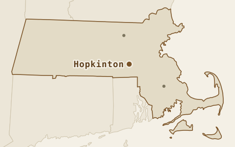
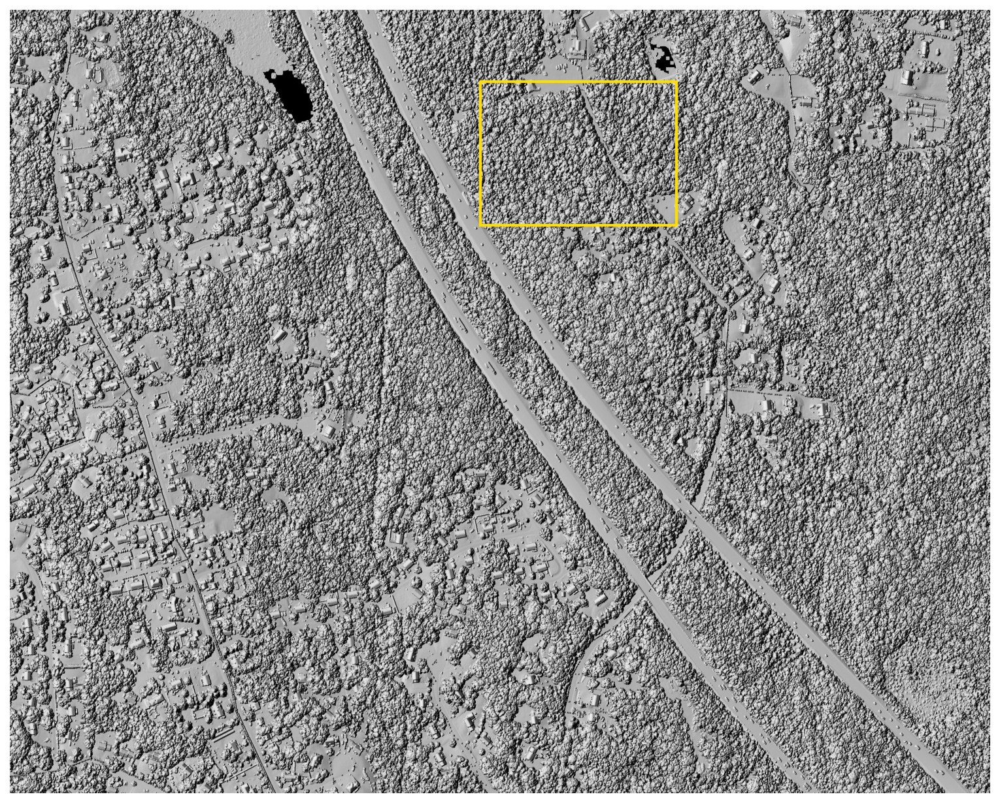
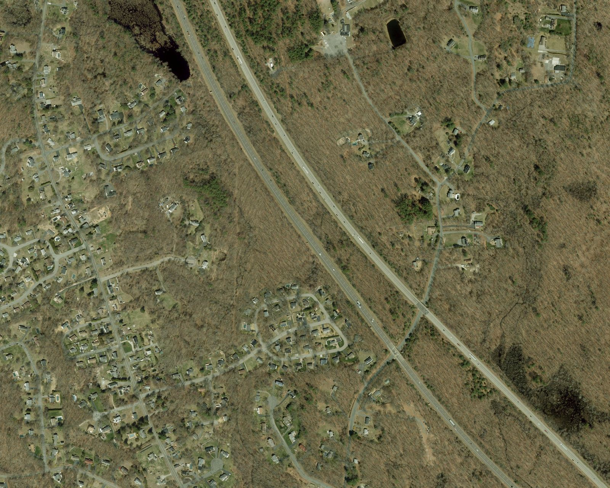
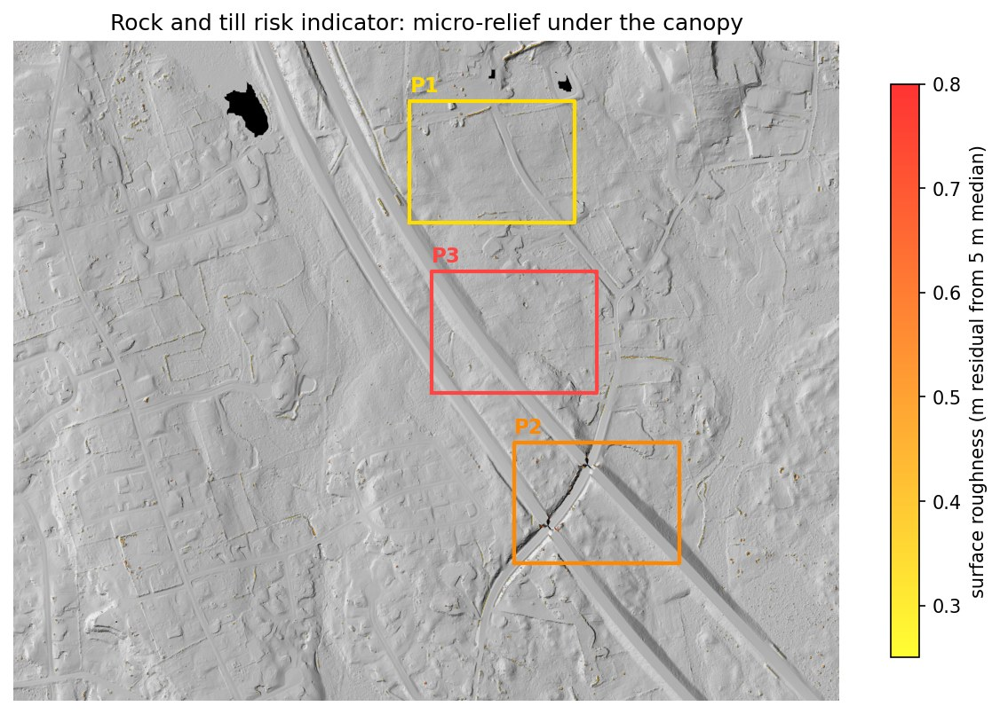
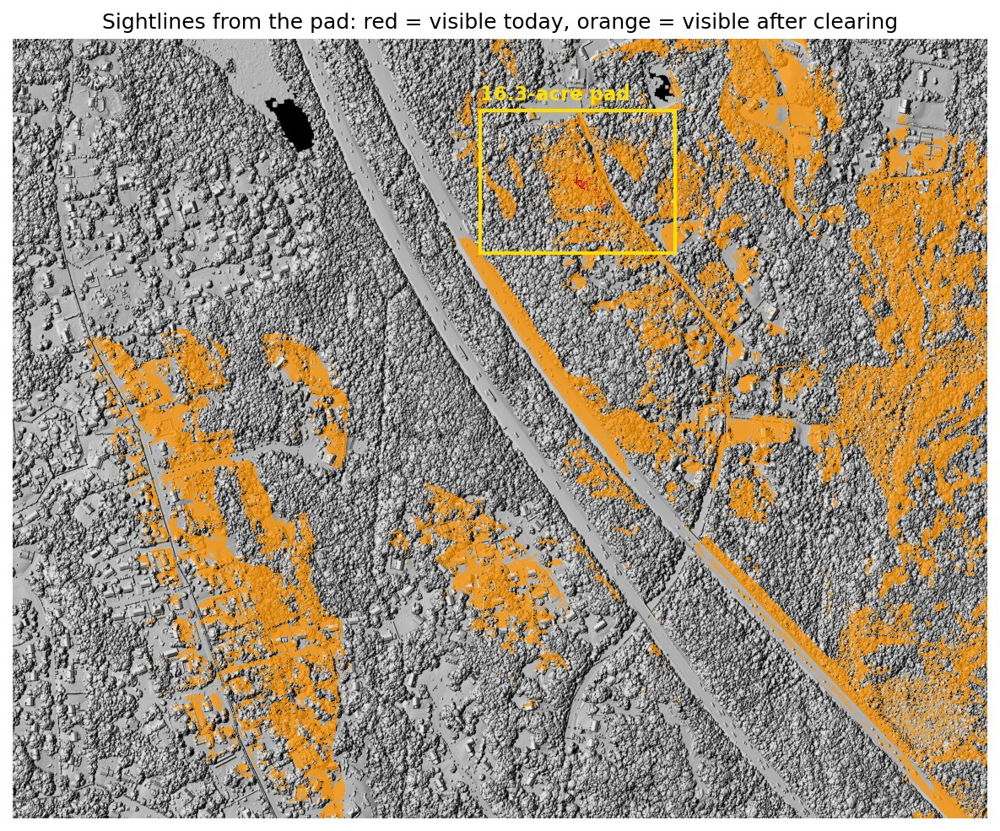

Same warehouse.
Three spots.
Three price tags.
This is rolling glacial forest along I-495, where Greater Boston's warehouses actually get built. On land like this the question isn't whether you can build, it's where the dirt math hurts least. I tested every position the same 16-acre pad could take in this study area, then priced the grading for the three best, and they come out $2.5M apart on one parcel for one building.

Drag the line
Left of the line is the treetop surface, roughly what a camera reconstructs when leaves hide the ground. Right of it is the bare earth, rebuilt from the laser pulses that found gaps in the canopy. Both come from the same flight, the same week and the same points, and the yellow rectangle marks the conceptual pad measured below.


The corridor where the buildings actually land
The I-495 belt between Hopkinton and Milford holds the state's densest concentration of industrial space, and the next building goes on land like this, which is rolling, wooded and highway-adjacent. On flat ground earthwork is a line item, but on glacial till it is a siting decision worth millions, and it interacts with everything else, because the flattest dirt here sits closest to the wetlands. This is also the site where the building-versus-tree problem got real, since canopy height alone can't tell a subdivision from a forest, so the pad search uses the lidar's building classification to stay out of people's backyards.

What the difference is worth
Three pads, three price tags
Every position the pad could take in the study area was screened, and the three best were priced. The cheapest dirt is not the answer, because P3 grades for $3.96M but fails half its constraint screen, the flattest ground here sitting next to the wetlands. P1 costs more to grade and clears 76% of the constraint screen, which is why it carries the rest of this page.

One pad, three surfaces
The selected pad, P1, is 16.3 acres and 93% forested. It sits on the cleanest ground in the search area and still needs real dirt work, because on glacial till everything does. Grading it to a level 140.29 m requires:
| Surface used for the estimate | Cut | Fill | Total moved | Illustrative cost at $20 / yd³ |
|---|---|---|---|---|
| Lidar bare earth | 158,621 | 158,372 | 316,993 yd³ | $6.34M |
| Treetop surface (canopy counted as ground) | 1,558,073 | 20,465 | 1,578,538 yd³ | $31.57M |
| 10 m national DEM, 2019 archive (pre-lidar) | 184,217 | 117,330 | 301,547 yd³ | $6.03M |
| Canopy error hiding in the treetop surface | 1,261,545 yd³ | ≈ $25.23M | ||
Rolling terrain is where coarse old data fails hardest. The 2019 national DEM runs 77 cm high on average inside this pad, over a metre RMSE, and while its total looks close it splits that total wrong, predicting a 66,900 yd³ surplus to haul away from a site that actually balances to within 250 yd³. At $20 a yard that is a $1.3M phantom line item, and the error grows with every hill the parcel has.
A ±10 cm data-sensitivity test changes the modeled volume by about ±8,628 yd³, or ±$173k at the illustrative unit rate. That shows how vertical uncertainty moves a screening result. It is not a construction contingency, and it does not cover design changes, soils, haul, mobilisation, rock, dewatering, escalation or contractor pricing.

More answers from the same flight
The earthwork number is the headline, but one dataset answers a stack of other early-stage questions:




What this means for the deal
| Screening item | Planning-level result |
|---|---|
| Modeled earthwork at the conceptual pad, graded to balance | $6.34M; ±$173k data-sensitivity band |
| Clearing, 15.1 forested acres | $45–91k |
| Access | 361 m route climbs 16 m, peaks at 11%, so contour or regrade |
| Stormwater basin land take (pre-design screening) | a natural low 300 m east stores the first-flush volume at 1 m stage, consuming about 2.3 ac |
| Terrain-screening subtotal | ≈ $6.41M + access work |
On rolling till, earthwork is the biggest lever in the deal. A purchase agreement would want to cover three things:
- Siting flexibility. The grading bill swings $2.5M across the three viable pad positions, so locking the building location before running the dirt math leaves a lot of that on the table.
- Geotech before reliance. The surface rock screen is clean, but subsurface ledge is invisible to lidar, so budget for test pits.
- Vernal pools. The depression screen found no candidates in or near any pad, though three state-mapped potential pools sit elsewhere in the study area. Treat it as screened clear, pending field confirmation at permitting. One limit is worth naming: a pool that held water when the lidar was flown leaves no depression in the bare-earth surface, so this screen can point to candidates but cannot establish that none are present. The basin sizing above is screening-level, and the design belongs to the civil engineer.
The numbers are checkable
- Data. USGS 3DEP lidar from the 2021 Central-Eastern Massachusetts acquisition, block 1, with a published accuracy of 10 cm RMSE, giving 41.8 million points for this site. Wetlands and streams come from MassGIS DEP layers with 100 ft and 200 ft buffers.
- Processing. The same PDAL pipeline as Studies 01 and 02, on its third run, producing the ground model, treetop model and canopy heights, plus the lidar's building classification as an exclusion mask for the pad search.
- Consistency. My ground model and the state's DEM, both from the same flight, differ by 3 mm on average and 7.6 cm RMSE over open ground. That agreement checks processing rather than independent field accuracy. The pre-2021 comparison uses the archived December 2019 national DEM rather than the current one, which was later rebuilt from this lidar.
- Volumes. Cell-by-cell raster math, cross-checked against an independent QGIS implementation, which agrees to six significant figures: cut 158,620.7 against 158,621 yd³ and fill 158,372.0 against 158,372. The cost basis is an illustrative $20/yd³ screening assumption with a $10–$40 sensitivity range.
Scope: a public-data demonstration for planning and comparison. Not included: survey and control, engineering, geotechnical work, rock excavation, unsuitable soil, drainage design, erosion control, utilities, pavement, retaining walls, permits, mitigation, mobilisation, haul and disposal, escalation, or contractor markup. A client engagement would confirm current data, scope, control and licensed-professional needs before any quantity is relied on. Scripts and pipeline files are available on request. Read the full assumptions, sources and limitations.